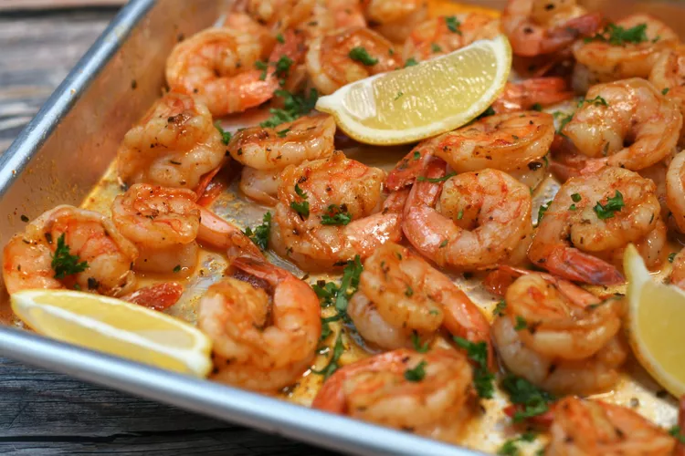

Sheet Pan Cajun Butter Shrimp

Description
Homemade Cajun seasoning and butter are the main
stars in this simple dish. Serve with rice or grits
drizzled with the pan sauce, or serve as an appetizer.
Also delicious tossed with buttered noodles.
Ingredients
- Cajun Seasoning
- 1 teaspoon smoked paprika
- 1/2 teaspoon garlic powder
- 1/2 teaspoon onion powder
- 1/2 teaspoon salt
- 1/2 teaspoon dried oregano
- 1/4 teaspoon freshly ground black pepper
- 1/4 teaspoon cayenne pepper
- 1/4 dried thyme
- Shrimp
- 2 pounds extra large shrimp, peeled and deveined
- 2 tablespoons olive oil
- 1/2 cup butter, cubed and at room temperature
- 2 tablespoons minced fresh parsley (Optional)
- 6 lemon wedges (optional)
Steps
- Preheat the oven to 400 degrees F (200 degrees C).
- Combine smoked paprika, garlic powder, onion powder,
salt, oregano, pepper, cayenne pepper, and thyme in
a small bowl. Pat shrimp dry and place in a large bowl.
Sprinkle with Cajun seasoning mixture and drizzle with
olive oil. Toss to coat evenly.
- Place shrimp in a single layer on a sheet pan without overcrowding
- Cook in the preheated oven until shrimp are opaque
in the middle, about 8 minutes. Immediately add butter
to the hot pan and toss with shrimp until butter is melted.
Sprinkle with parsley, if desired and serve with lemon wedges.